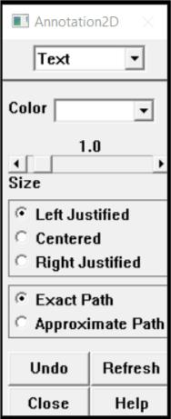

2.10 Annotation
A common step in the analysis process is presenting model and results data with additional notations applied, such as dimensions, comments, highlights, or other text or artwork. The standard ANSYS display can be enhanced with a variety of annotation primitives including text, dimensions, polygons, symbols, and even pie charts. The ‘!’ and ‘$’ characters are not available for text annotation.
2-D text and graphics annotations are formed as a 2-D overlay on the graphics screen. Because this overlay exists as an imaginary plane, when the analyst transforms the model, the constructed annotation will not move with the model. Because of this, 2-D annotation should be used primarily for finalized reports and printouts. Access 2-D annotation functions through Utility Menu> PlotCtrls> Annotation> Create 2D Annotation.
The following annotation primitives are available from the 2-D annotation dialog box:
- Text
- Lines
- Rectangles
- Circles
- Arcs
- Polygons
- Wedges
- Arrows
- Dimensions
- Pies
- Symbols
On choosing Utility Menu> PlotCtrls> Annotation> Create 2D Annotation, the text annotation dialog box appears (Fig. 2.21). Text annotation can be applied either as stroke text or as bitmap fonts. The ‘!’ and ‘$’ characters cann’t be used in ANSYS text annotation.

Fig. 2.21 Stroke Text Annotation Dialog Box
The fields and buttons presented in the annotation dialog box change when the annotation entity type is reset. For example, if the annotation entity is reset to arcs, the dialog box shown, changes to display the options available for annotation arcs. Regardless of which annotation entity is choosen, the annotation dialog box always displays four action buttons:
Undo - Erases the last annotation entity created.
Refresh - Redisplays the annotation, which is useful after move and delete operations.
Close - Closes the annotation dialog box.
Help - Displays online help for the dialog of the currently selected annotation entity.
Once annotations are created, the analyst can control their display by selecting Utility Menu> PlotCtrls> Annotation> Display Annotation. Accessing this menu pick toggles annotation display on and off.